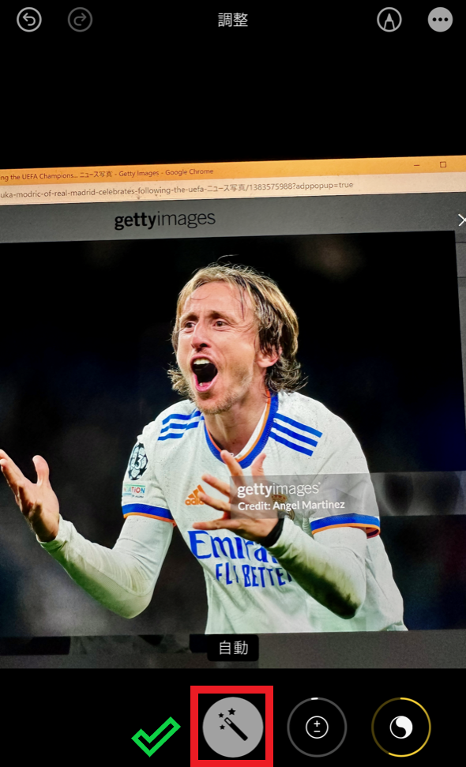

{% if processed_image_paths %}
{% else %}

※この方法を使用する際は左上の「今すぐサッカー選手を予測！」を押してから選手予測を行って
{% endif %}
申し訳ございません。写真から顔を認証することができませんでした。
写真から顔画像をトリミング後、もう一度こちらからファイルの選択をお願いします。
写真の認識が上手くいかない方へ
テレビに映っている選手を撮影した時などに選手の顔を上手く認識できない場合があります。そんな場合は以下の方法によって写真の補正を行うと認識精度が上がります！
補正前
補正後

このようにiPhoneの場合、写真を開くと右上に「編集」ボタンがあり、ここをタップして「魔法の杖マーク」をタップすると自動で写真の補正を行ってくれます。見た目ではわかりずらいですが、この操作により顔の輪郭が強調されるため、顔の認識精度を上げることができます。
Androidの場合は機種によって操作方法が異なりますが、顔の認識精度が悪いと感じたら、写真の自動補正を行ってみましょう。